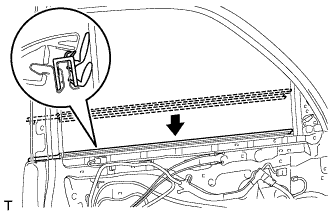

БОКОВОЙ ДАТЧИК СИСТЕМЫ SRS > УСТАНОВКА |
| 1. УСТАНОВИТЕ ЛЕВЫЙ БОКОВОЙ ДАТЧИК СИСТЕМЫ SRS |
Выключите зажигание.
Отсоедините провод от отрицательного (-) вывода аккумуляторной батареи.
Установите боковой датчик системы SRS и закрепите его болтом.
Убедитесь, что крепление бокового датчика системы SRS не ослаблено.
Подсоедините разъем.
| 2. УСТАНОВИТЕ ВНУТРЕННИЙ УПЛОТНИТЕЛЬ СТЕКЛА ЛЕВОЙ ПЕРЕДНЕЙ ДВЕРИ |
|  |
Установите внутренний уплотнитель стекла передней двери.
| 3. УСТАНОВИТЕ ПАНЕЛЬ ОБЛИЦОВКИ ЛЕВОЙ ПЕРЕДНЕЙ ДВЕРИ В СБОРЕ |
 |
Подсоедините трос дистанционного управления замком передней двери в сборе и внутренний трос замка передней двери в сборе.
Подсоедините 2 разъема.
Для моделей с запоминающими устройствами сидений:
Подсоедините разъемы.
 |
Закрепите панель облицовки передней двери с помощью 4 захватов на внутреннем уплотнителе стекла передней двери, как показано на рисунке.
 |
Введите в зацепление 12 фиксаторов и держатель панели облицовки передней двери, чтобы установить панель облицовки передней двери.
Вверните 3 винта.
| 4. УСТАНОВИТЕ КРЫШКУ ПОДЛОКОТНИКА ЛЕВОЙ ПЕРЕДНЕЙ ДВЕРИ |
 |
Введите в зацепление 8 захватов и установите облицовку верхнего поручня.
| 5. УСТАНОВИТЕ ДЕРЖАТЕЛЬ ВНУТРЕННЕЙ РУЧКИ ЛЕВОЙ ДВЕРИ № 2 |
 |
Установите держатель внутренней ручки и закрепите его 3 захватами.
| 6. УСТАНОВИТЕ ОБЛИЦОВКУ КРОНШТЕЙНА НИЖНЕЙ РАМЫ ЛЕВОЙ ПЕРЕДНЕЙ ДВЕРИ |
Введите в зацепление 2 захвата, чтобы установить облицовку кронштейна нижней рамы передней двери.
| 7. ПОДСОЕДИНИТЕ ПРОВОД К ОТРИЦАТЕЛЬНОМУ ВЫВОДУ АККУМУЛЯТОРНОЙ БАТАРЕИ |
| 8. ПРОВЕРЬТЕ КОНТРОЛЬНУЮ ЛАМПУ АВАРИЙНОГО СОСТОЯНИЯ SRS |
Проверьте контрольную лампу аварийного состояния SRS (Нажмите здесь).